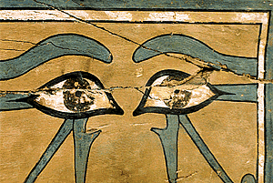

In many instances, wooden coffins were decorated with coloured pigments, such as on this coffin of Gua, 12th Dynasty from El Bersha. The coffin carpenter would need to select a wood with a suitable grain surface for this type of finish. In this example, the wood chosen was cedar of Lebanon. The pigments can be identified using optical microscopy, X-ray diffraction and Raman spectroscopy.